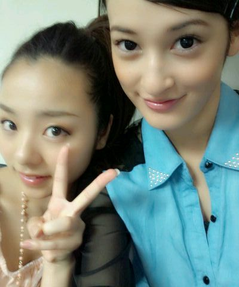

ほいっ♪こんちわぁ〜(((=・ω・
新しい制服♪,
ろってぃーでぇ〜す・ω・
コメントたくさん
ありがとうございます*^^*
あのねっ, 今日は
まひろからの
オススメ ジュース☆が
あるのっ*・ω・*
黒酢を サイダーで割って
飲むと めっちゃまいう〜
なんだよぉ〜う!
体にも良いし是非
飲んでみてみてっ♪にっ
三ツ矢サイダーの
ゼロカロリーなら
太んないw よっ(⌒‐⌒)
黒酢でも 普通のんや
ハチミツ入りのんや
色々あるけど
何でもオツケーイなんだから・ω・=)))
ちなみにまひろは
今日 ハチミツ入り黒酢を
混ぜました ))
さっぱりして
うまいうま〜い(*^^*)
黒酢は 5分の1 位で
いいのかなっ?♪
その辺は 自分の好きな位でねっ♪
ふふふーん♪
あっ , 『乃木ここ』
昨日 まひろも見ました^Ο^
皆の動きや発言見てたら
笑っちゃった*^Ο^*
よかったら,まだ続きが
いっぱいあるので
見てくたさいねっ^^
皆でボーリング大会やってます。
まひろも ああやって
ちゃんとやったん
初めてかもしんない=・ω・=♪
楽しかったから
また オフの日があったら
メンバー達と行ってみたいなっ*^^*
にっ ,
そしてそしてぇ〜 ))
今日は ‥
せっちゃん♪が
まひろのところに
お泊まりに来てまぁ〜す*・ω・*
ほほーい☆
せっちゃん♪今お風呂上がった
ところだ ^ω^ ))
せっちゃん♪との
ツーショットぉ〜〜

いぇ〜い♪
せっちゃん♪すっごい
美しい‥。・Ο・
参りましたぁ〜。
ひひっ ))
あっ, コメント読んでて
思ったんだけどね,
皆さんにちょっと
聞いてみたいことが(⌒‐⌒)
まひろのヘアスタイル♪
ストレート
巻き
ポニーテール
その他
どれが 一番ましですかぁ^?^?
にっ。
以上っ ろってぃーでした*・ω・*
のしのし